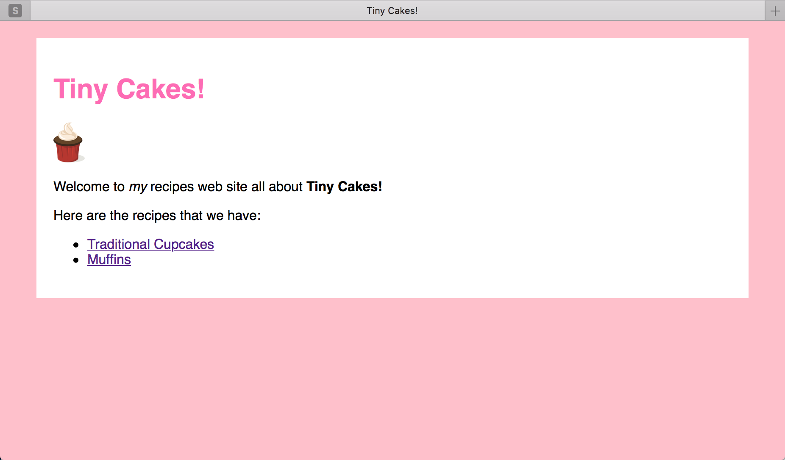

Etapy:
Step 8 - Selektory CSS
Selektory
Selektory pozwala nam określić (lub wybrać) części strony, dla których chcemy ustalić deklaracje stylu.
Do tej pory używaliśmy tylko nazwy znaczników jako selektory. Jest to przydatne, ponieważ oznacza, że dane style zostaną zastosowane do każdego z tych elementów. Ale czasami chcemy ustalić dany zestaw reguł tylko do wybranych elementów. Możemy to zrobić za pomocą różnych typów selektorów.
Ustawimy kolor tytułu naszej strony („Tiny Cakes!”) na intensywny róż.
Nasz tytuł jest <h1>, więc dodamy następujący zapis do naszego CSS:
h1 {
color: #ff69b4;
}
Odśwież stronę. Tytuł powinien wyglądać tak jak zamierzyliśmy.

Spójrzmy na nasze podstrony z przepisami. Tytuły przepisów są również wściekle różowe, a nie planowaliśmy tego. Jak to naprawić?
Istnieją dwa atrybuty, które możemy dodać do każdego elementu, które pozwolą nam na bardziej precyzyjne stosowanie arkuszy stylu. Są to class i id.
Atrybutu class użyjemy kiedy mamy zamiar wykorzystać ten sam styl do kilku elementów na tej samej stronie.
Atrybutu id użyjemy wtedy kiedy na stronie powinien znaleźć się tylko jeden dany element w odpowiednim stylu.
W takim razie <h1> na naszej stronie głównej powinien otrzymać atrybut id:
<h1 id="sitetitle">Tiny Cakes!</h1>
Zaktualizujemy teraz nasz CSS aby sprecyzować nasz selektor h1:
h1#sitetitle {
color: #ff69b4;
}
Znak # w selektorze oznacza, że po # znajdzie się nazwa id.
Teraz jedynie <h1> posiadający id sitetitle będzie różowy. Pozostałe nagłówki na naszych podstronach z przepisami powinny być czarne.
Tak jest o wiele lepiej. To zajmijmy się teraz nagłówkami na naszych podstronach i ulepszmy je trochę.
Na początek zaktualizuj nagłówki ingredients, method, i variations aby miały klasę o nazwie recipepart, w ten sposób:
<h2 class="recipepart">Ingredients:</h2>
Upewnij się, że dodałeś klasę do wszystkich <h2> na obu podstronach.
Teraz dodaj poniższy kod CSS do naszego arkusza stylu:
h2.recipepart {
background-color: #f5f5f5;
border: 1px solid #dcdcdc;
border-left: 10px solid grey;
padding: 10px 0px 8px 10px;
}
Kropka . w selektorze oznacza, że mamy do czynienia z klasą.
Co się zmieniło?
- Zmieniliśmy kolor tła na jasny szary (
#f5f5f5). - Utworzyliśmy szarą (
#dcdcdc) ramkę o grubości 1px wokół nagłówka. - Nadaliśmy lewej ramce grubość 10px i kolor
grey - Ustawiliśmy odstęp (padding), żeby wyglądało estetyczniej.
Ustawiając odstęp tzw. padding, od razu ustaliliśmy 4 wartości za jednym razem. Można tak zrobić ustalając wartości padding jak i margin. Wartości tych własności można określić na cztery sposoby:
- Podając jedną wartość. Wtedy przyjmą ją wszystkie strony (prawo, lewo, góra, dół)
- Podając 2 wartości, pierwsza określi górę i dół, a druga prawo i lewą stronę.
- Podając 3 wartości, pierwsza odniesie się do góry, druga do prawej i lewej strony, natomiast trzecia do dolnej części.
- Podając 4 wartości, oznaczą kolejno górę, prawą stronę, dół i lewą stronę.
Istnieją specjalne parametry dla padding i margin dla każdej stony elementu:
padding-top,padding-left,padding-rightipadding-bottom(kolejno: górny odstęp, lewy odstęp, prawy odstęp, dolny odstęp)margin-top,margin-left,margin-rightimargin-bottom(kolejno: górny margines, lewy margines, prawy margines i dolny margines)
Możesz ich używać osobno w przypadku kiedy stylu powinien oddziaływać tylko dla jednej ze stron.
W naszym przypadku ustaliliśmy border, ramkę aż dwa razy. Postąpiliśmy tak dlatego, że chcieliśmy, żeby trzy strony miały taką samą wartość, natomiast dla lewej strony ustawiliśmy inną wartość. Moglibyśmy użyć wyżej wymienionych parametrów, ale nasz sposób jest szybszy i mamy mniej kodu. Kod działa, gdyż kolejność deklaracji stylu ma znaczenie. Spróbuj zmienić kolejność linijek i umieścić border-left przed border. Jeśli tak zrobisz to border-left zostanie nadpisane przez border.
Nasz nagłówek wygląda lepiej, ale jest trochę za szaro, nie sądzisz? Zmieńmy kolor grubszej, lewej ramki na inny dla każdego nagłówka.
Elementy mogą posiadać kilka klas, wystarczy oddzielić je spacją.
Zaktualizujemy nasz znacznik <h2> o dodatkowe klasy tak aby odpowiadały temu czego dany nagłówek dotyczy.
W ten sposób:
<h2 class="recipepart ingredients">Ingredients:</h2>
<h2 class="recipepart method">Method:</h2>
<h2 class="recipepart variations">Variations:</h2>
Następnie dodajmy poniższy kod CSS do naszego arkusza stylu:
h2.ingredients {
border-left-color: #00ced1;
}
h2.method {
border-left-color: #00bfff;
}
h2.variations {
border-left-color: #3cb371;
}
CSS pozwala nam na utworzenie wielu różnych stylów, których selektory się nachodzą na siebie. Dzięki temu możemy zastosować zestaw stylów do wielu elementów, a następnie osobno dodatkowe style dla każdego z elementów. Jest to o wiele przyjemniejsze niż pisanie wszystkich stylów osobno.
Selektor uniwersalny
Istnieje wiele różnych typów selektorów niż grupy i klasy, które możesz łączyć ze sobą. Nie będziemy ich dzisiaj omawiać. Jeśli Cię to zaciekawiło, możesz poczytać więcej tutaj
Istnieje jednak specjalny selektor o którym warto wspomnieć. Jest to *, tzw. global selector/selektor uniwersalny i dotyczy on wszystkich elementów.
Selektor uniwersalny jest najbardziej użyteczny w połączeniu z innymi selektorami, ale może być naprawdę przydatny podczas eksperymentowania. Zwłaszcza z ramkami.
Spróbuj dodać poniższy kod na sam koniec Twojego arkusza stylu:
* {
border: 1px solid black;
}
Spowoduje to narysowanie jednolitej czarnej ramki wokół każdego elementu na stronie, który może mieć ramkę. Jest to przydatne, aby sprawdzić ile miejsca zajmują różne elementy na stronie.
Oczywiście usuniemy ten fragment kodu przed opublikowaniem naszej strony.
Jak niepoprawny HTML wpływa na CSS
Zanim przejdziemy do następnego kroku, przypomnijmy sobie krok 3. Wtedy wspominaliśmy, że zagnieżdżanie niektórych znaczników HTML może na pierwszy rzut oka wyglądać dobrze, ale nie zadziała dobrze w CSS.
Podaliśmy wtedy poniższy przykład:
<p>
Welcome to <em>my</em> recipes web site all
about <strong>Tiny Cakes!</strong>
<h2>Recipes:</h2>
Here are the recipes that we have:
</p>
Domyślnie będzie to wyglądać jak dwa akapity oddzielone nagłówkiem. Dodaj tylko następujący styl (nadaje wszystkim akapitom zielone tło) to zobaczysz coś dziwnego.
p {
background-color: green;
}

Drugi akapit nie ma zielonego tła. Dlaczego?
Jeśli użyjesz narzędzi deweloperów w swojej przeglądarce do sprawdzenia strony (Ctrl+Sthift+I dla Chrome), zobaczysz, że drugi akapit nie znajduje się w tagach <p>.
Dzieje się tak, ponieważ pojawiło się coś w HTML jest dziwne (nagłówek w akapicie) i przeglądarka spróbowała zinterpretować i wyświetlić to w jakiś sensowniejszy sposób.
Zachowaj ostrożność, pisząc HTML. Postaraj się postawić na prostotę w swoim kodzie. Chyba nie chcesz, aby przeglądarka musiała wykonywać jakieś sztuczki, tak by Twoja strona działała. W końcu może się zdarzyć, że i tak nie zadziała w oczekiwany sposób.
Dodatkowo Twoja strona może wyglądać zupełnie inaczej na każdej różnej przeglądarce.